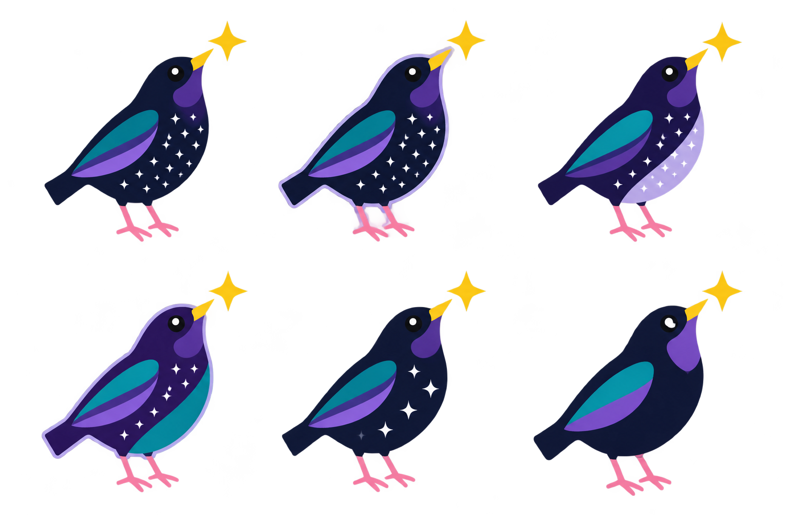
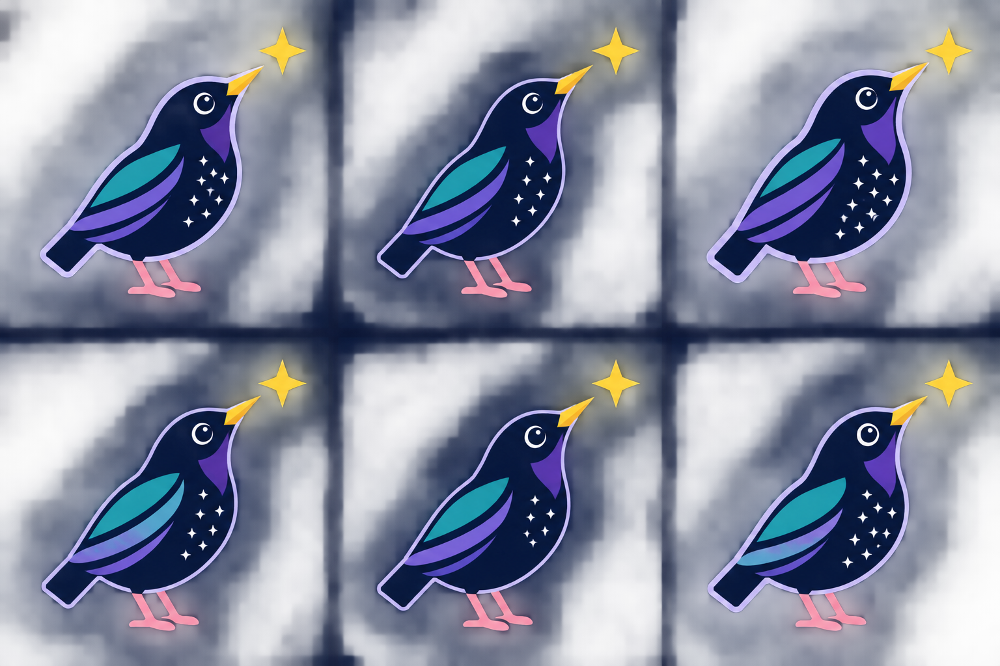
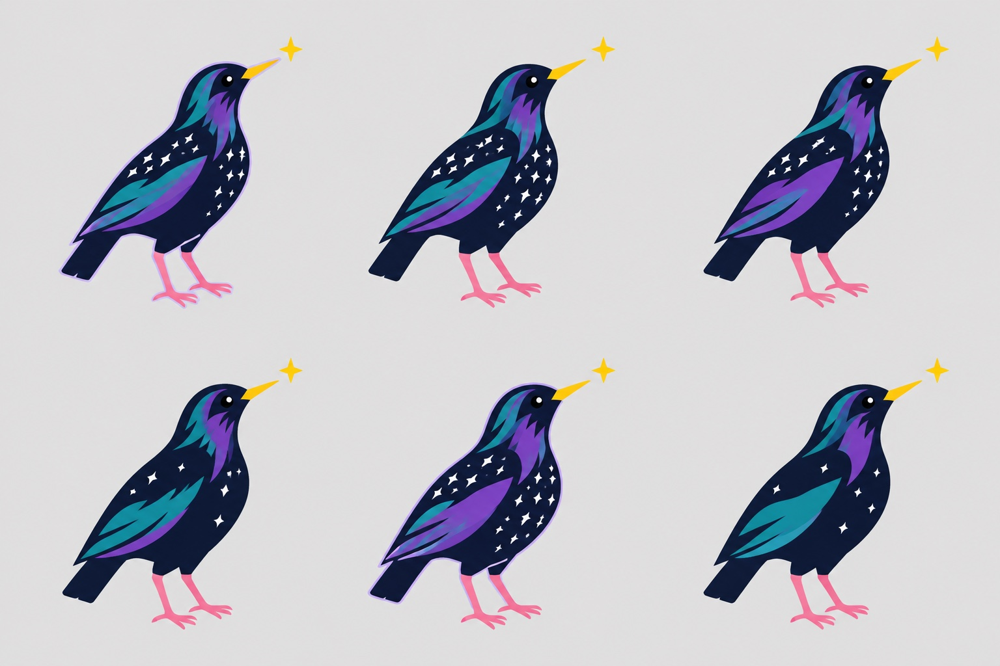

Figma round 2: night starling colors
Logo-style birds, not realistic ones, in the colors you picked: navy blue-black, teal and violet wing bands, white star speckles, and sometimes the light lavender outline. D and E use the OG pose with a bigger star and a slightly bigger head. F uses the A6 pose. Pick a tile by its number (like "D4"), or mix parts, and I'll trace it into SVG.
OG
Your original, for comparison.
D. OG pose, bold logo style
D1 as asked. D2 and D4 have the lavender outline. D3 has a lavender belly, D4 a teal belly. D5 has fewer, bigger speckles for small sizes. D6 is the simplest, like an app icon. The first copy is on light grey, the second is on Starling's night sky, so you can see which ones stay readable on the site.

- D1
- D2
- D3
- D4
- D5
- D6
- D1
- D2
- D3
- D4
- D5
- D6
E. Made for the dark header
All six have the lavender outline so the dark bird stands out on a dark background, like a sticker. Figma made their background patchy and see-through, so it may show faint smudges; ignore those.

- E1
- E2
- E3
- E4
- E5
- E6
F. The A6 pose
Standing taller with the head only slightly raised, beak pointing at a small star. Closer to a real starling, with the teal and violet sheen on the head and neck. F1 and F5 have the lavender outline.

- F1
- F2
- F3
- F4
- F5
- F6